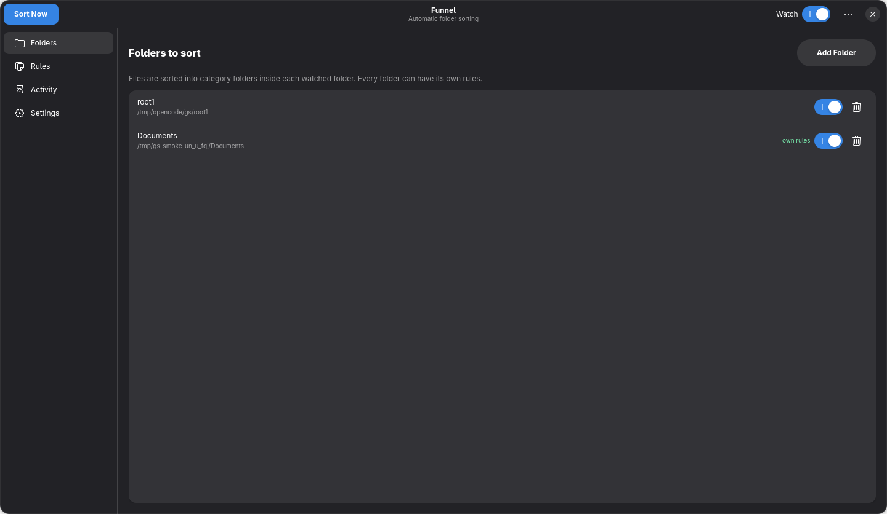
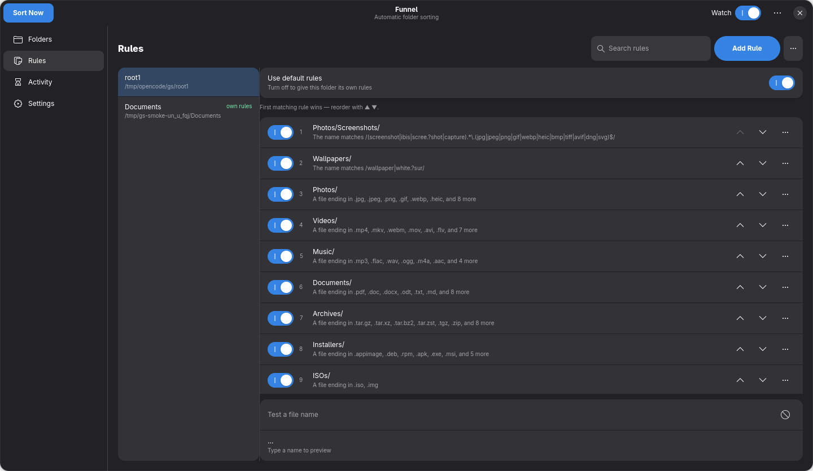
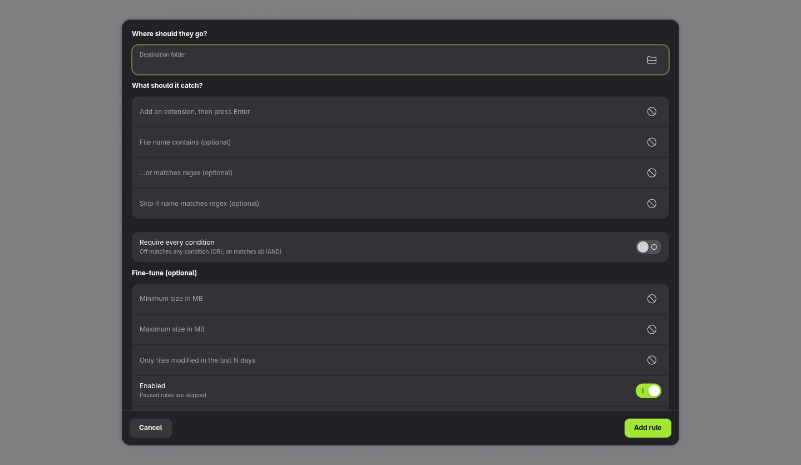
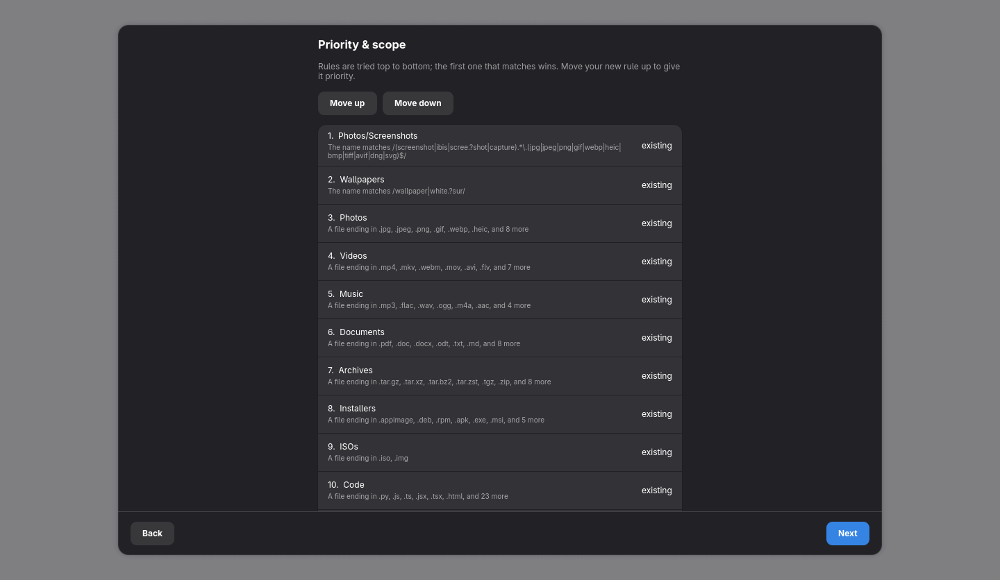

Funnel
Funnel watches the folders you choose and moves each new file to the folder its rule names.
Rules are per folder. Every move is written to a journal, so any of them can be undone.
flatpak remote-add --if-not-exists funnel \
https://notmicrosoft2000-cmd.github.io/gnu-sorter/flatpak/io.neptunepc.Funnel.flatpakrepo
flatpak install funnel io.neptunepc.Funnel
flatpak run io.neptunepc.FunnelThe Flatpak build has no tray icon and no login autostart; the sandbox does not allow either. Other install paths.
Six files arrive. Four destinations catch them.
The demo runs the same extension matching the app runs. In the app, each move is written to the journal as it happens.
The demo repeats. In the app the same match happens once per file, and the journal keeps the record.
A rule is a condition and a destination.
A rule belongs to a folder. It catches files by extension or by a pattern in the name, sends them to one destination, and sits at a priority in the list.
Priority decides which rule applies when two rules match the same file. The wizard sets it. The advanced editor shows the rule as JSON, which --export-rules and --import-rules move between machines.
Downloads can keep one list. Projects can keep another. A folder that should follow the shared template inherits it, and --attach-rules puts it back on the template.
Files that match no rule go to ~/Needs-review. Nothing is deleted.
Every move is journaled. Undo is a command.
Funnel waits for a file to stop changing before it moves it. If the destination already has that name, the default is to rename, not replace.
- Journal
- ~/.local/share/gnu-sorter/history.log
- Restore preview
- gnu-sorter --restore --dry-run
- On conflict
- rename (default), overwrite, skip
- Journal search
- gnu-sorter --journal --journal-name 'screenshot*'
gnu-sorter --restore --journal-rule Photos --dry-run
gnu-sorter --undo-last 1The dry run prints the files, their sizes and any name clashes before anything moves. Drop --dry-run to commit, or add --restore-into to send the files somewhere other than the original folder.
Six steps, then a preview of your real files.
The wizard writes the same rule the advanced editor writes. The last step lists the files it would move before you save anything.
-
01
Choose the folder to tidy
Pick a folder you own, for example
~/Downloads. -
02
Pick what to catch
Choose extensions, a name pattern, or both. Patterns accept regular expressions.
-
03
Take the destination
The wizard suggests a folder. Keep it or choose another one.
-
04
Add limits
Set a minimum size or age, and choose the match mode.
-
05
Set priority and scope
Decide where the rule sits in the list and which folder it applies to.
-
06
Review the result
Check the files it would move, then save the rule.
The advanced editor exposes the same rule as JSON. Rules reference.
The Linux build, screen by screen.
Screens from the GTK4 app. The Windows build has the same four areas with WinUI 3 controls.








Linux with Flatpak. Windows with WinUI 3.
The two builds share the rule format and the four areas. Installation differs.
Primary package. The commands at the top of this page add the project repository, install Funnel and start it. Updates arrive with flatpak update. The sandbox has no tray icon and no login autostart.
Clone the repository and run ./install.sh. Add --service to watch folders on login. gnu-sorter --update installs the newest release.
A separate native build with the same four areas: Folders, Rules, Activity, Settings. Same GPL-3.0 license.
The service menu adds Sort with Funnel to the right-click menu for a folder.
Add a folder, then run a sweep.
A sweep sorts what is already in the folder. Watching sorts what arrives next. If a move is wrong, put it back.
gnu-sorter --sweep
gnu-sorter --undo-last 1